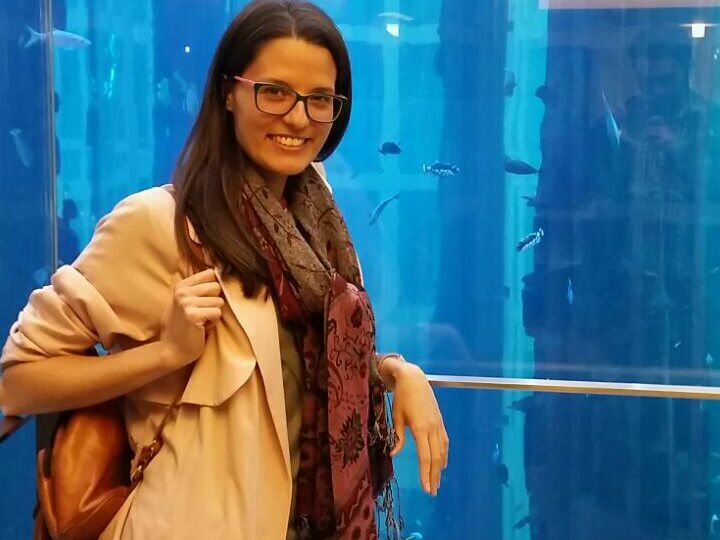

I am a Postdoctoral Research Associate at the Department of Language and Linguistic Science at the University of York.
Since 2015 I work in the project Voice and Identity – Source, Filter, Biometric funded by the UK Arts and Humanities Research
Council (AHRC), collaborating with Paul Foulkes, Peter French and other colleagues from the University of York and JP French Associates.
The aim of the project is to compare the performance of different methods for forensic voice comparison – from linguistics and phonetics,
acoustics, and automatic speaker recognition (ASR) – on the same set of recordings.